ggplot(faithful) +
geom_point(aes(x = eruptions, y = waiting), shape=15, size=15, alpha=.5)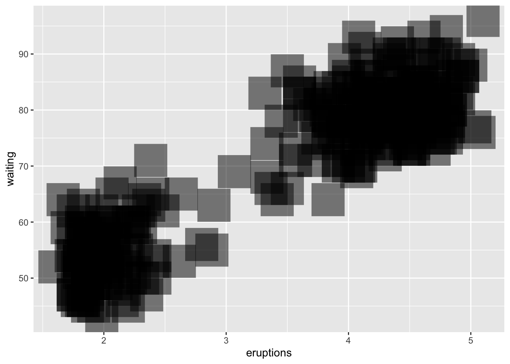
Modify the code below to make the points larger squares and slightly transparent. See ?geom_point for more information on the point layer.
ggplot(faithful) +
geom_point(aes(x = eruptions, y = waiting), shape=15, size=15, alpha=.5)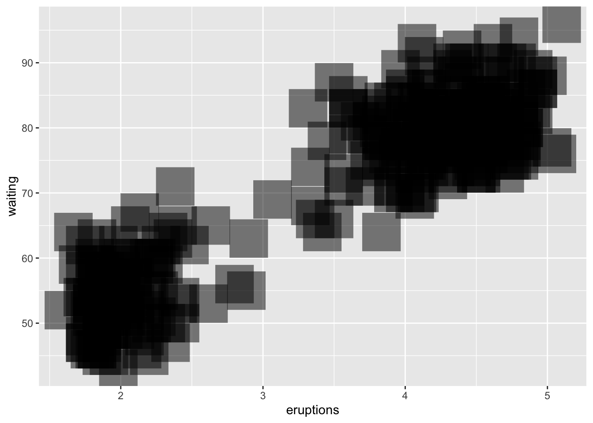
Color the two visible clusters in the histogram with different colors.
ggplot(faithful) +
geom_histogram(aes(x = eruptions, color = eruptions>3.2, fill=eruptions>3.2))`stat_bin()` using `bins = 30`. Pick better value with `binwidth`.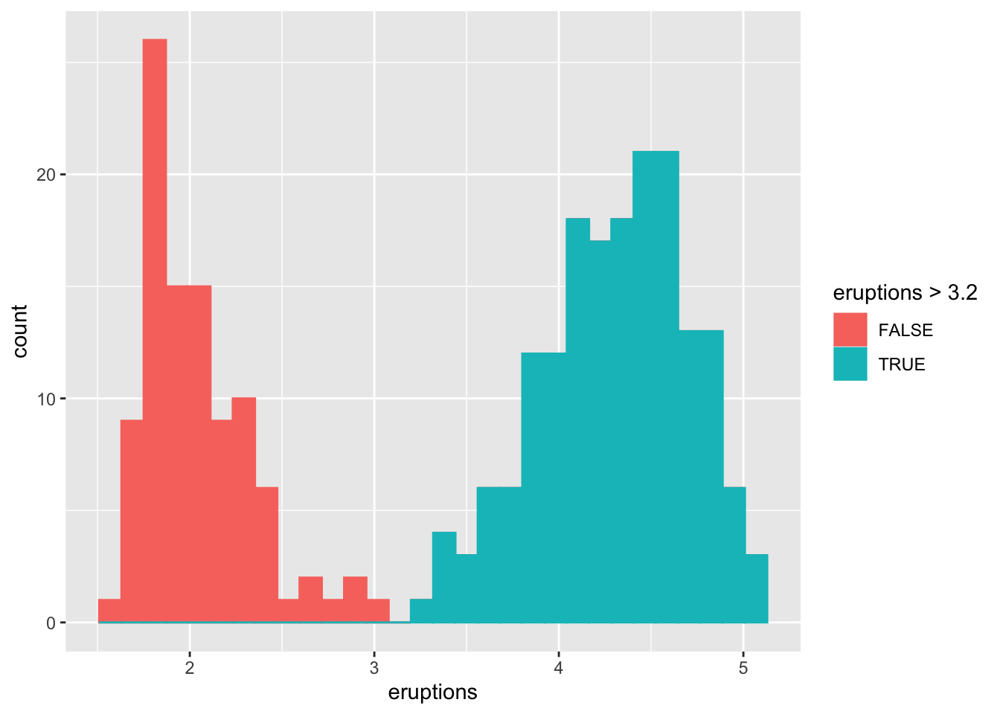
Add a line that separates the two point distributions. See ?geom_abline for how to draw straight lines from a slope and intercept.
ggplot(faithful) +
geom_point(aes(x = eruptions, y = waiting))+
geom_vline(xintercept=3)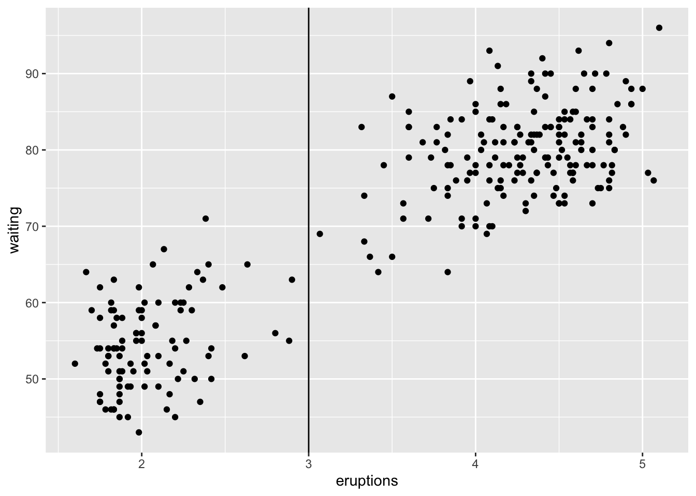
Use RColorBrewer::display.brewer.all() to see all the different palettes from Color Brewer and pick your favorite. Modify the code below to use it.
ggplot(mpg) +
geom_point(aes(x = displ, y = hwy, color = class)) +
scale_color_brewer(type = 'qual', palette ="BrBG")
Modify the code below to create a bubble chart (scatterplot with size mapped to a continuous variable) showing cyl with size. Make sure that only the present amount of cylinders (4, 5, 6, and 8) are present in the legend.
ggplot(mpg) +
geom_point(aes(x = displ, y = hwy, color = class, size=cyl)) +
scale_color_brewer(type = 'qual') +
scale_size_continuous(breaks=c(4,5,6,8),name="Cylinders")+
labs(size="Cylinders")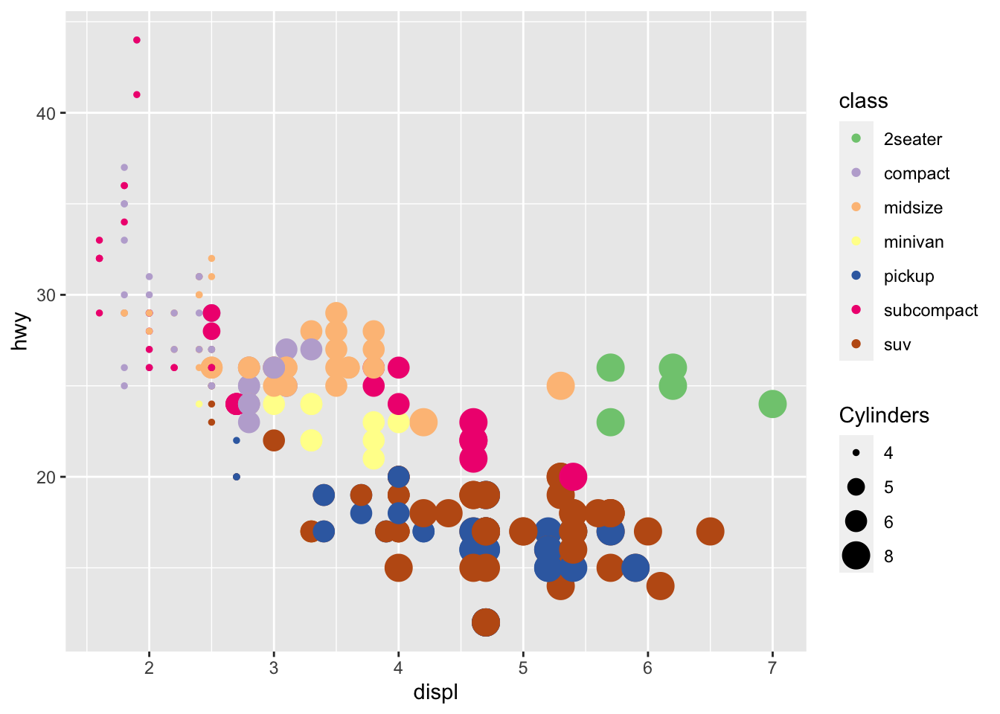
Modify the code below so that color is no longer mapped to the discrete class variable, but to the continuous cty variable. What happens to the guide?
ggplot(mpg) +
geom_point(aes(x = displ, y = hwy, color = cty, size = cty))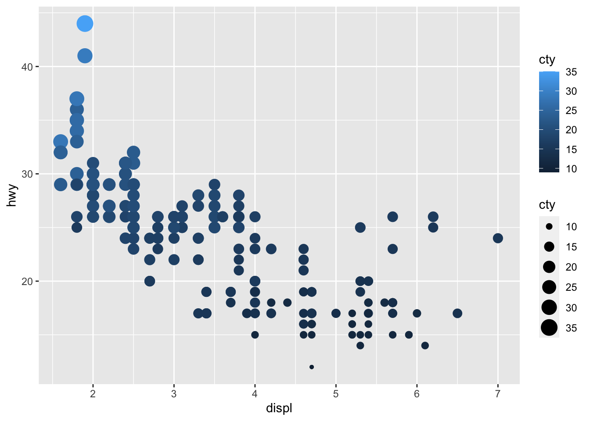
# The guide is now represented by a gradient of color, rather than discrete colors
# This corresponds to the continuous cty variableOne of the great things about facets is that they share the axes between the different panels. Sometimes this is undesirable though, and the behavior can be changed with the scales argument. Experiment with the different possible settings in the plot below:
# each facet has its own scales for x and y axes
ggplot(mpg) +
geom_point(aes(x = displ, y = hwy)) +
facet_wrap(~ drv, scales="free") 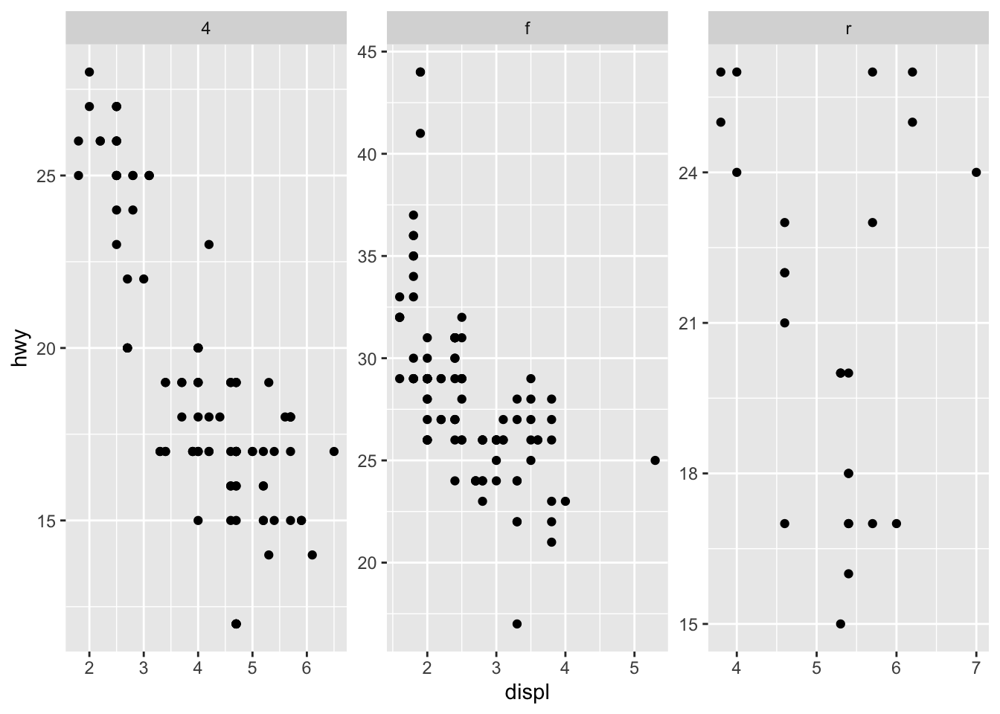
# y-axes stays the same, x-axes vary across facets
ggplot(mpg) +
geom_point(aes(x = displ, y = hwy)) +
facet_wrap(~ drv, scales="free_x") 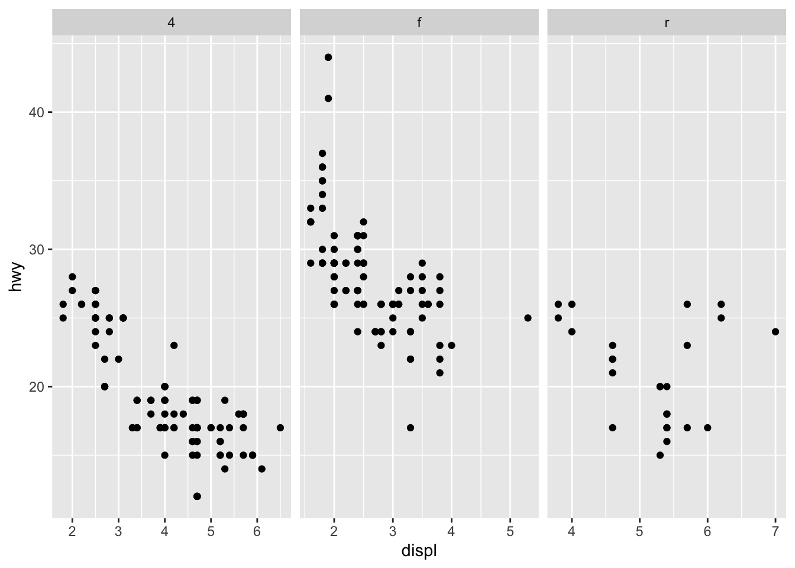
# x-axes stays the same, y-axes vary across facets
ggplot(mpg) +
geom_point(aes(x = displ, y = hwy)) +
facet_wrap(~ drv, scales="free_y") 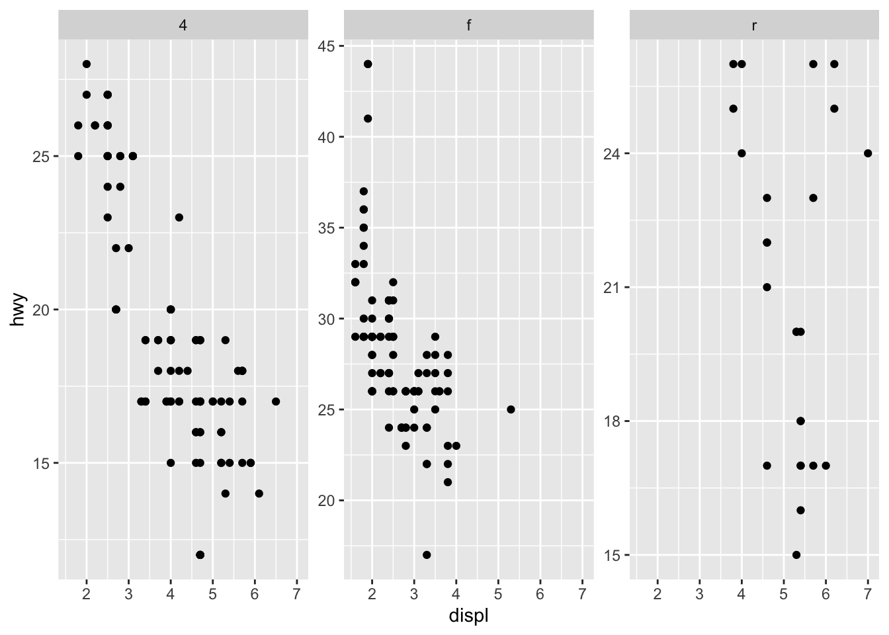
Themes can be overwhelming, especially as you often try to optimize for beauty while you learn. To remove the last part of the equation, the exercise is to take the plot given below and make it as hideous as possible using the theme function. Go absolutely crazy, but take note of the effect as you change different settings.
mpg |>
ggplot(aes(y = class, fill = drv)) +
geom_bar() +
facet_wrap(~year) +
labs(
title = "Number of car models per class",
caption = "source: http://fueleconomy.gov",
x = 'Number of cars',
y = NULL
) +
theme_minimal()+ # giving myself a blank slate
theme(
# graph background color
panel.background = element_rect(fill = "limegreen"),
# gridline color
panel.grid.major = element_line(color = "blue", size = 0.5),
# thick, purple axis lines
axis.line = element_line(color = "purple", linewidth = 2),
# red x-axis labels
axis.text.x = element_text(color = "red", size = 10, angle = 45, hjust = 1),
#orange y-axis labels
axis.text.y = element_text(color = "orange", size = 10),
# nasty title formatting
plot.title = element_text(color = "brown", size = 30, face = "bold", hjust = 0.5),
# nasty subtitle formatting
plot.subtitle = element_text(color = "darkgreen", size = 20),
# Making a yellow-background legend, ugly colors
legend.background = element_rect(fill = "yellow"),
legend.title = element_text(color = "magenta", size = 15),
legend.text = element_text(color = "cyan", size = 12),
# fixing up margins
plot.margin = unit(c(3, 3, 3, 3), "lines")
)Warning: The `size` argument of `element_line()` is deprecated as of ggplot2 3.4.0.
ℹ Please use the `linewidth` argument instead.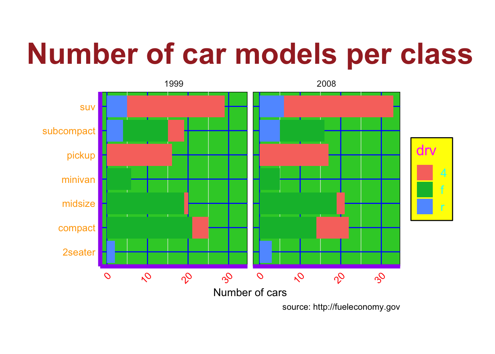
In the simulation above, what is the average dem_prop? What is the standard deviation of dem_prop? How does this change for different values of sample_size?
# A tibble: 90,000 × 5
id vote dem_prob_pop sample_size num_sims
<int> <chr> <chr> <chr> <chr>
1 1 Dem 0.75 90 1000
2 1 Dem 0.75 90 1000
3 1 Dem 0.75 90 1000
4 1 Rep 0.75 90 1000
5 1 Dem 0.75 90 1000
6 1 Rep 0.75 90 1000
7 1 Dem 0.75 90 1000
8 1 Dem 0.75 90 1000
9 1 Dem 0.75 90 1000
10 1 Dem 0.75 90 1000
# ℹ 89,990 more rows# A tibble: 500 × 2
id dem_prop
<int> <dbl>
1 1 0.507
2 2 0.54
3 3 0.547
4 4 0.517
5 5 0.54
6 6 0.493
7 7 0.5
8 8 0.567
9 9 0.513
10 10 0.523
# ℹ 490 more rows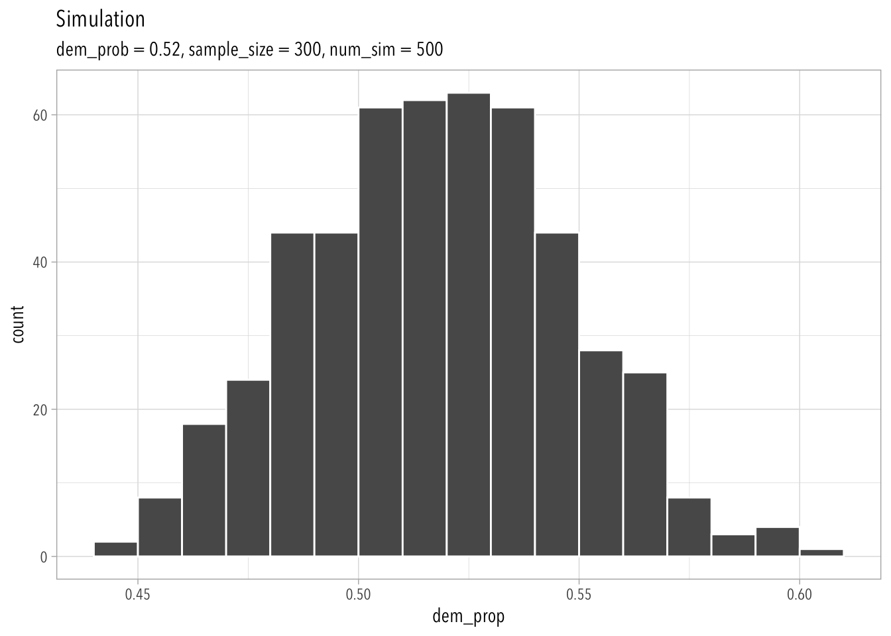
[1] 0.738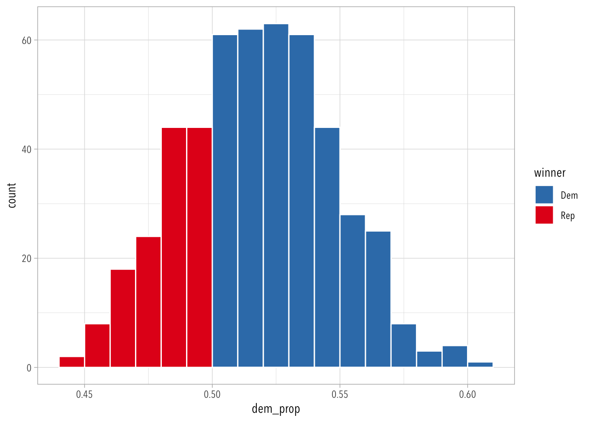
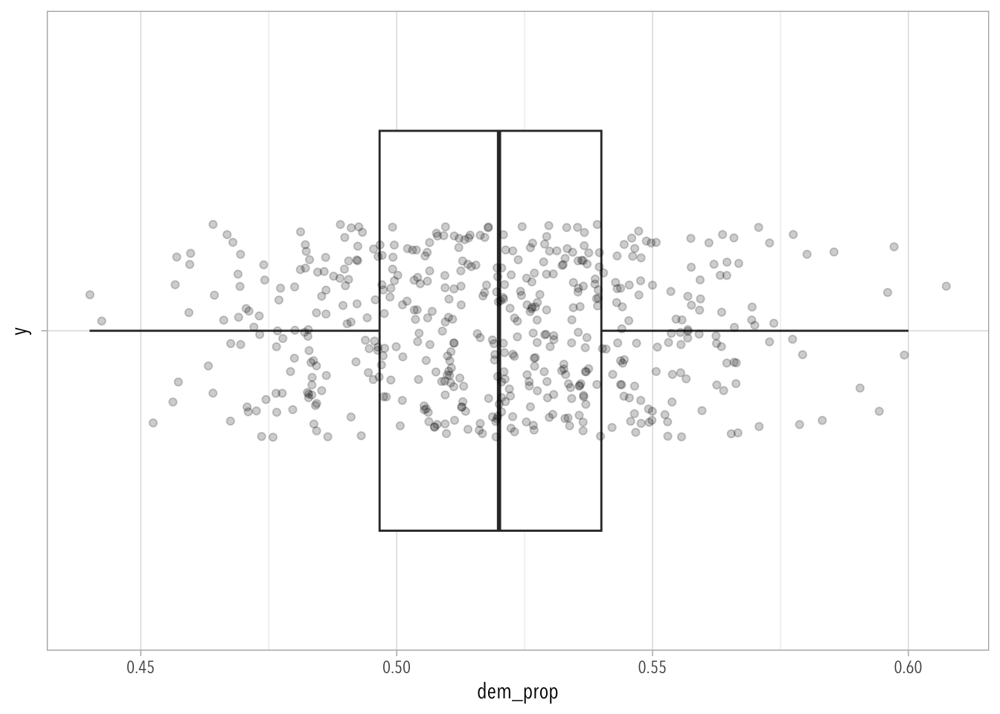
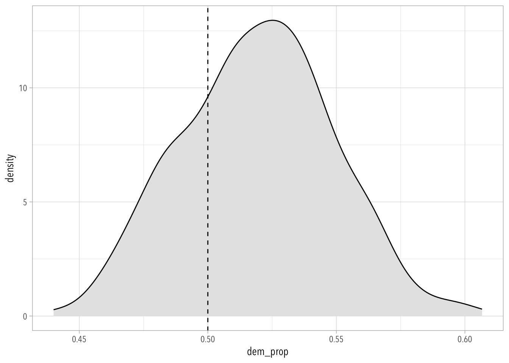
# calculating mean dem_prop
mean(results$dem_prop)[1] 0.5186333# calculating standard deviation of dem_prop
sd(results$dem_prop)[1] 0.02815129# as sample size increases, the mean gets closers to 0.52
# the standard deviation decreasesCreate five different simulations with different values of sample_size (e.g., 50, 200, 500, 1000, 2000). Put them together into a single dataset and then visualize the results using boxplots. What is going on?
sims_sample50 <- simulation_votes(dem_prob_pop = 0.52, sample_size = 50, num_sims = 1e3)
sims_sample200 <- simulation_votes(dem_prob_pop = 0.52, sample_size = 200, num_sims = 1e3)
sims_sample500 <- simulation_votes(dem_prob_pop = 0.52, sample_size = 500, num_sims = 1e3)
sims_sample1000 <- simulation_votes(dem_prob_pop = 0.52, sample_size = 1000, num_sims = 1e3)
sims_sample2000 <- simulation_votes(dem_prob_pop = 0.52, sample_size = 2000, num_sims = 1e3)
combined_dfs_samplesizes<-bind_rows(sims_sample50,sims_sample200,sims_sample500,sims_sample1000,sims_sample2000)
results2 <- combined_dfs_samplesizes |>
group_by(id, sample_size) |>
summarize(dem_prop = mean(vote == "Dem"))`summarise()` has grouped output by 'id'. You can override using the `.groups`
argument.# making box plot
results2 |>
ggplot(aes(dem_prop, "")) +
ggtitle("Results by sample size")+
geom_boxplot(outlier.shape = NA)+
facet_wrap(~sample_size)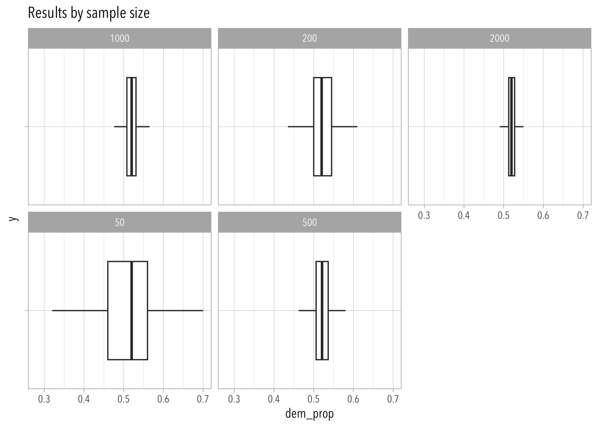
# as sample size increases, the IQR decreases and the median gets closer to the true value (0.52)Create five different simulations with different values of dem_prob_pop (e.g., 0.49, 0.52, 0.55, 0.58). Put them together into a single dataset and then visualize the results using boxplots. What is going on?
sims_dem0.49<- simulation_votes(dem_prob_pop = 0.49, sample_size = 500, num_sims = 1e3)
sims_dem0.52 <- simulation_votes(dem_prob_pop = 0.52, sample_size = 500, num_sims = 1e3)
sims_dem0.55 <- simulation_votes(dem_prob_pop = 0.55, sample_size = 500, num_sims = 1e3)
sims_dem0.58 <- simulation_votes(dem_prob_pop = 0.58, sample_size = 500, num_sims = 1e3)
sims_dem0.64 <- simulation_votes(dem_prob_pop = 0.64, sample_size = 500, num_sims = 1e3)
combined_dfs_dem_prob_props<-bind_rows(sims_dem0.49,sims_dem0.52,sims_dem0.55,sims_dem0.58,sims_dem0.64)
results3 <- combined_dfs_dem_prob_props |>
group_by(id, dem_prob_pop) |>
summarize(dem_prop = mean(vote == "Dem"))`summarise()` has grouped output by 'id'. You can override using the `.groups`
argument.#making boxplots
results3 |>
ggplot(aes(dem_prop, "")) +
ggtitle("Results by dem_prob_pop")+
geom_boxplot(outlier.shape = NA)+
facet_wrap(~dem_prob_pop)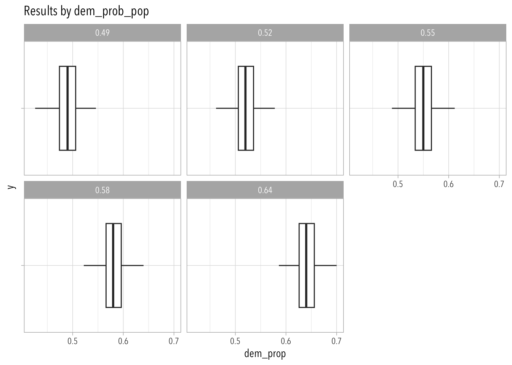
# As the dem_prob_pop increases, the resulting boxplots shift right
# this indicates a greater proportion of democrats in the voting sample